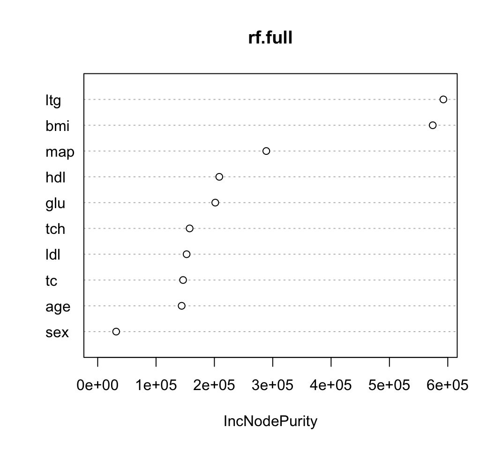

Chapter 8 Extra Topics
8.1 Uncertainty in Variable Importance Measures
Many machine learning/penalized regression methods generate measures of variable importance.
Random forests generate variable importance scores.
Partial dependence plots are useful for assessing the impact of a covariate for any learning method.
Lasso has selection/magnitude of regression coefficients.
These variable importance measures do not usually come with a measure of uncertainty for each variable importance score.
For example, you may want to report a confidence interval for the VIMP scores.
8.1.1 Subsampling for Random Forest VIMP scores
A general approach to assessing the uncertainty of a variable importance measure is to use some form of repeated subsampling/sample splitting.
The basic idea is to draw subsamples, and for each subsample compute variable importance scores. Then, estimate the variance of each variable importance score using their variation across different subsamples
- See Ishwaran and Lu (2019) for more details of this approach.
- Steps in subsampling approach:
Draw a subsample of size b from the original dataset. Call it \(D_{s}\).
Using random forest on dataset \(D_{s}\), compute VIMP scores \(I_{s,j}\) for variables \(j=1,\ldots,p\).
Repeat steps 1-2 \(S\) times. This will produce \(I_{s,j}\) for all subsamples \(s = 1, \ldots, S\) and all variables \(j = 1, \ldots, p\).
Estimate the variance of \(I_{s,j}\) with the quantity \[\begin{equation} \hat{v}_{j} = \frac{b}{nK} \sum_{s=1}^{S}\Big( I_{s,j} - \bar{I}_{.,j} \Big)^{2} \end{equation}\]
- A \(95\%\) confidence interval for the variable importance of variable \(j\) will then be
\[\begin{equation}
I_{j} \pm 1.96 \times \sqrt{\hat{v}_{j}}
\end{equation}\]
- Here, \(I_{j}\) is the variable importance score from the full dataset.
To test this out, we will use the diabetes data.
- This can be obtained from https://hastie.su.domains/CASI/data.html
This dataset has 442 observations and 10 covariates
The outcome variable of interest is prog
## [1] 442 11## age sex bmi map tc ldl hdl tch ltg glu prog
## 1 59 1 32.1 101 157 93.2 38 4 2.110590 87 151
## 2 48 0 21.6 87 183 103.2 70 3 1.690196 69 75
## 3 72 1 30.5 93 156 93.6 41 4 2.029384 85 141
## 4 24 0 25.3 84 198 131.4 40 5 2.123852 89 206
## 5 50 0 23.0 101 192 125.4 52 4 1.863323 80 135
## 6 23 0 22.6 89 139 64.8 61 2 1.819544 68 97- Let’s first fit a randomForest to the entire dataset and plot the variable importance measures
## randomForest 4.7-1## Type rfNews() to see new features/changes/bug fixes.
- You can extract the actual values of the variable importance scores by
using the
importancefunction.
## IncNodePurity
## age 141639.96
## sex 33094.33
## bmi 549157.13
## map 301674.34
## tc 142999.29
## ldl 158712.59
## hdl 210026.44
## tch 171331.16
## ltg 570623.23
## glu 204574.84- Now, let’s compute variable importance scores across \(S = 100\) subsamples (each of size 50)
and store it in a \(10 \times S\) matrix called
Imp.Subs
S <- 5
b <- 100
Imp.Subs <- matrix(0, nrow=nrow(Imp.Full), ncol=S)
rownames(Imp.Subs) <- rownames(Imp.Full)
for(k in 1:S) {
## sample without replacement
subs <- sample(1:nrow(diabetes), size=b)
diabetes.sub <- diabetes[subs,]
rf.sub <- randomForest(prog ~ ., data=diabetes.sub)
Imp.Subs[,k] <- importance(rf.sub)
}- From
Imp.Subs, we can compute the variance estimates \(\hat{v}_{j}\).
imp.mean <- rowMeans(Imp.Subs)
vhat <- (b/nrow(diabetes))*rowMeans((Imp.Subs - imp.mean)^2)
print(vhat)## age sex bmi map tc ldl hdl tch
## 13407154 1733533 527940804 48297068 3272834 4859532 8560622 17682861
## ltg glu
## 49244569 9986855- We can now report confidence intervals for the variable importance scores:
vi.upper <- Imp.Full[,1] + 1.96*sqrt(vhat)
vi.lower <- Imp.Full[,1] - 1.96*sqrt(vhat)
VIMP_CI <- cbind(Imp.Full[,1], vi.lower, vi.upper)
colnames(VIMP_CI) <- c("estimate", "lower", "upper")
VIMP_CI[order(-VIMP_CI[,1]),]## estimate lower upper
## ltg 570623.23 556869.03 584377.42
## bmi 549157.13 504122.28 594191.97
## map 301674.34 288053.10 315295.57
## hdl 210026.44 204291.77 215761.11
## glu 204574.84 198380.85 210768.83
## tch 171331.16 163089.16 179573.15
## ldl 158712.59 154391.90 163033.28
## tc 142999.29 139453.46 146545.12
## age 141639.96 134463.26 148816.65
## sex 33094.33 30513.72 35674.948.1.2 Stability Selection for Penalized Regression
- Let’s use the lasso with penalty \(\lambda = 10\) on the
diabetesdata:
## Loading required package: Matrix## Loaded glmnet 4.1-3- We can look at the estimated coefficients to see which variables were selected
## 11 x 1 sparse Matrix of class "dgCMatrix"
## s0
## (Intercept) -91.2876572
## age .
## sex .
## bmi 4.0286593
## map 0.4572995
## tc .
## ldl .
## hdl .
## tch .
## ltg 45.4422144
## glu .- The selected variables are those with nonzero coefficients:
# Look at selected coefficients ignoring the intercept:
selected <- abs(coef(diabet.mod)[-1]) > 0
selected## [1] FALSE FALSE TRUE TRUE FALSE FALSE FALSE FALSE TRUE FALSEWhen thinking about how certain you might be about a given set of selected variables, one natural question is how would this set of selected variables change if you re-ran the lasso on a different subset.
You might have more confidence in a variable that is consistently selected across random subsets of your data.
For a given choice of \(\lambda\), the stability of variable \(j\) is defined as \[\begin{equation} \hat{\pi}_{j}(\lambda) = \frac{1}{S}\sum_{s=1}^{S} I( A_{j,s}(\lambda) = 1), \end{equation}\] where …
\(A_{j,s}(\lambda) = 1\) if variable \(j\) in data subsample \(s\) is selected and
\(A_{j,s}(\lambda) = 0\) if variable \(j\) in data subsample \(s\) is not selected
Meinshausen and Bühlmann (2010) recommend drawing subsamples of size \(n/2\).
The quantity \(\hat{\pi}_{j}(\lambda)\) can be thought of as an estimate of the probability that variable \(j\) is in the “selected set” of variables.
Variables with a large value of \(\hat{\pi}_{j}(\lambda)\) have a greater “selection stability”.
You can plot \(\hat{\pi}_{j}(\lambda)\) across different values of \(\lambda\) to get a sense of the range of selection stability.
- For the
diabetesdata, let’s first compute an \(S \times m \times 10\) array, where the \((k, h, j)\) element of this array equals \(1\) if variable \(j\) was selected in subsample \(k\) with penalty term \(\lambda_{h}\):
nsamps <- 200
b <- floor(nrow(diabetes)/2)
nlambda <- 40 ## 40 different lambda values
lambda.seq <- seq(0.1, 20.1, length.out=nlambda)
## Create an nsamps x nlambda x 10 array
SelectionArr <- array(0, dim=c(nsamps, nlambda, 10))
for(k in 1:nsamps) {
subs <- sample(1:nrow(diabetes), size=b)
diabetes.sub <- diabetes[subs,]
for(h in 1:nlambda) {
sub.fit <- glmnet(x=diabetes.sub[,1:10],y=diabetes.sub$prog,
lambda=lambda.seq[h])
selected <- abs(coef(sub.fit)[-1]) > 0
SelectionArr[k,h,] <- selected
}
}- From this array, we can compute a matrix containing
selection probability estimates \(\hat{\pi}_{j}(\lambda)\).
- The \((j, h)\) component of this matrix has the value \(\hat{\pi}_{j}(\lambda_{h})\)
SelectionProb <- matrix(0, nrow=10, ncol=nlambda)
rownames(SelectionProb) <- names(diabetes)[1:10]
for(h in 1:nlambda) {
SelectionProb[,h] <- colMeans(SelectionArr[,h,])
}- The first few columns of
SelectionProblook like the following:
## [,1] [,2] [,3] [,4] [,5]
## age 0.970 0.770 0.660 0.515 0.415
## sex 1.000 1.000 1.000 1.000 0.995
## bmi 1.000 1.000 1.000 1.000 1.000
## map 1.000 1.000 1.000 1.000 1.000
## tc 0.970 0.905 0.815 0.730 0.610
## ldl 0.905 0.170 0.180 0.215 0.245
## hdl 0.895 0.965 0.980 0.985 0.995
## tch 0.915 0.635 0.440 0.290 0.195
## ltg 1.000 1.000 1.000 1.000 1.000
## glu 0.965 0.860 0.765 0.715 0.670- We can now plot the stability measures as a function of \(\lambda\)
## Convert to long form:
df <- data.frame(varname=rep(names(diabetes)[1:10], each=nlambda),
selection.prob=c(t(SelectionProb)), lambda=rep(lambda.seq, 10))
head(df)## varname selection.prob lambda
## 1 age 0.970 0.1000000
## 2 age 0.770 0.6128205
## 3 age 0.660 1.1256410
## 4 age 0.515 1.6384615
## 5 age 0.415 2.1512821
## 6 age 0.270 2.6641026##
## Attaching package: 'ggplot2'## The following object is masked from 'package:randomForest':
##
## margin